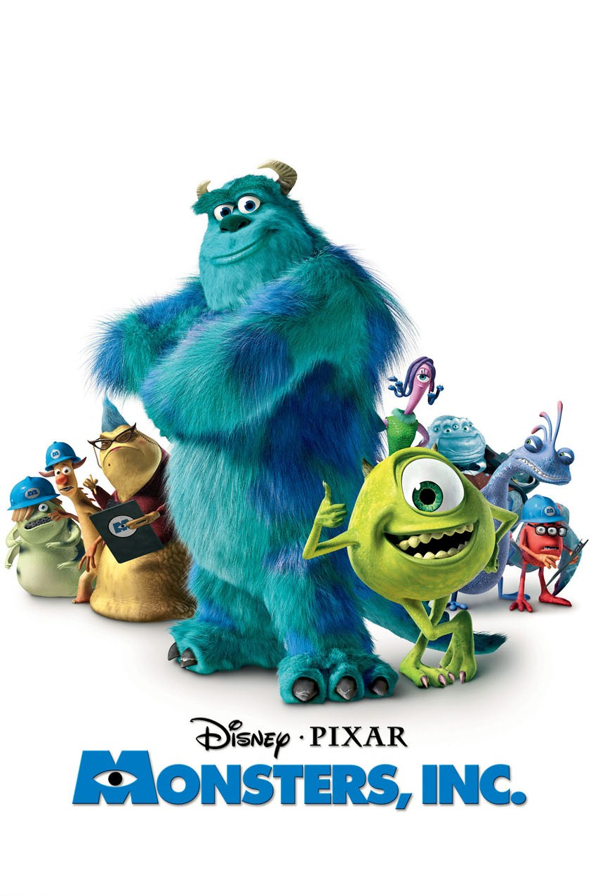
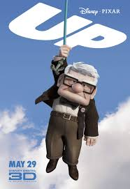

Películas de Pixar
Pixar ha creado de forma original, 15 largometrajes animados producidos y mercalizados bajo la bandera de Walt Disney Pictures.
Toy Story es una película infantil de animación por computadora dirigida por John Lasseter, estrenada en 1995 y producida por Walt Disney Pictures y Pixar. Fue el primer largometraje de Pixar, además de la primera cinta animada completamente con efectos digitales en la historia del cine.
es una película de animación generada por ordenador realizada, producida y distribuida por Walt Disney Pictures y Pixar Animation Studios. Dirigida por John Lasseter y Andrew Stanton, se estrenó en los Estados Unidos el 20 de noviembre de 1998.
Monsters, Inc. (titulada Monstruos, S.A. en España) es una película animada producida por Pixar Animation Studios, estrenada en cines por Walt Disney Pictures y Buena Vista Internacional el 2 de noviembre de 2001. Fue reestrenada en 3D en 2012.
 La historia se basa en un padre pez payaso llamado Marlín, quien va en busca de su pequeño hijo Nemo junto a su nueva amiga un pez cirujano azul llamada Dory.
La historia se basa en un padre pez payaso llamado Marlín, quien va en busca de su pequeño hijo Nemo junto a su nueva amiga un pez cirujano azul llamada Dory.
Cars es una película de 2006 de animación por ordenador - producida por Pixar Animation Studios y lanzada por Walt Disney Pictures . Dirigida y co-escrita por John Lasseter , es la última película producida por Pixar antes de ser comprada por Disney.
Up (titulada Up: una aventura de altura en Hispanoamérica)3 es una película de animación y aventuras producida por Walt Disney Pictures y Pixar Animation Studios, dirigida por Pete Docter, estrenada en 2009 y ganadora de dos premios Óscar.4 La trama relata las aventuras de un viudo de edad avanzada llamado Carl Fredricksen y de un niño escultista cuyo nombre es Russell, quienes viajan a Cataratas del Paraíso, en Venezuela, en el interior de una casa flotante suspendida con globos rellenos de helio.
 BUSCANDO A DORY, de Disney•Pixar, reúne a Dory, la olvidadiza pez cirujano preferida por la audiencia, con sus amigos Nemo y Marlin en una cruzada para hallar respuestas acerca de su pasado. ¿Qué puede recordar? ¿Quiénes son sus padres? ¿Y dónde aprendió a hablar en idioma ballena?
BUSCANDO A DORY, de Disney•Pixar, reúne a Dory, la olvidadiza pez cirujano preferida por la audiencia, con sus amigos Nemo y Marlin en una cruzada para hallar respuestas acerca de su pasado. ¿Qué puede recordar? ¿Quiénes son sus padres? ¿Y dónde aprendió a hablar en idioma ballena?